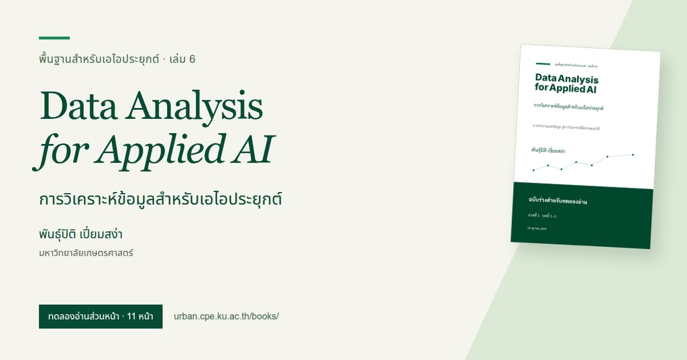

หนังสือวิเคราะห์ข้อมูลสำหรับคนที่ไม่ได้เรียนคอมพ์


หลังจากเปิดวิชาใหม่ได้แล้ว ผมเริ่มเตรียมหนังสือ Data Analysis for Applied AI หรือ “การวิเคราะห์ข้อมูลสำหรับเอไอประยุกต์” ให้คนที่ไม่ได้เรียนคอมพ์ได้ลองอ่าน ทั้งผู้เรียนในรายวิชาและคนที่อยากเรียนรู้ด้วยตนเอง
หนังสือใช้ เรื่องฝนในกรุงเทพฯ เป็นตัวอย่างต่อเนื่อง ตั้งแต่ตัวเลขมาจากไหน ไปจนถึงนำไปตอบคำถามอะไรได้บ้าง ผมหวังว่าเรื่องใกล้ตัวจะช่วยให้ผู้อ่านเข้าใจเรื่องข้อมูลได้ง่ายขึ้น
เริ่มจากร่าง 3 บท ในแผนหนังสือ 15 บท
ณ วันที่โพสต์ 28 ตุลาคม 2569 หนังสือมีฉบับร่าง 3 บท จากทั้งหมด 15 บทที่วางแผนไว้ สำหรับวิชา 1 หน่วยกิตที่ตั้งใจให้ผู้เรียนจากต่างสาขาเข้าถึงได้ และเผื่อผู้ที่ต้องการอ่านเรียนรู้ด้วยตนเองด้วย
เล่มนี้เป็นหนึ่งในหนังสือชุดพื้นฐานสำหรับเอไอประยุกต์ 6 เล่ม โดยภาพปกระบุเป็น เล่ม 6 และเชื่อมกับวิชาการวิเคราะห์ข้อมูลเบื้องต้นใน ชุดวิชาพื้นฐาน AIEP ทั้ง 6 วิชา
ชวนคนที่ไม่ได้อยู่สายคอมพ์ช่วยอ่านและแนะนำ
ผมอยากฟังความเห็นจากผู้อ่าน โดยเฉพาะคนที่ไม่ได้อยู่สายคอมพ์ ว่าส่วนไหนเข้าใจง่าย ส่วนไหนอ่านแล้วงง เพื่อใช้ปรับปรุงหนังสือต่อไป
เปิดอ่านหนังสือ Data Analysis for Applied AI และแนะนำกันได้ที่ โพสต์ต้นฉบับบน Facebook